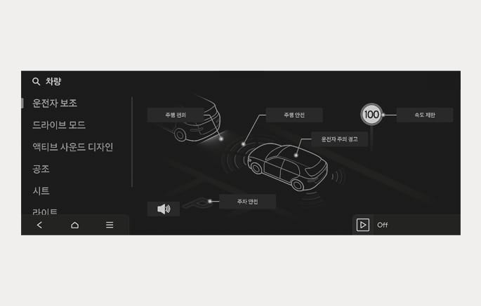
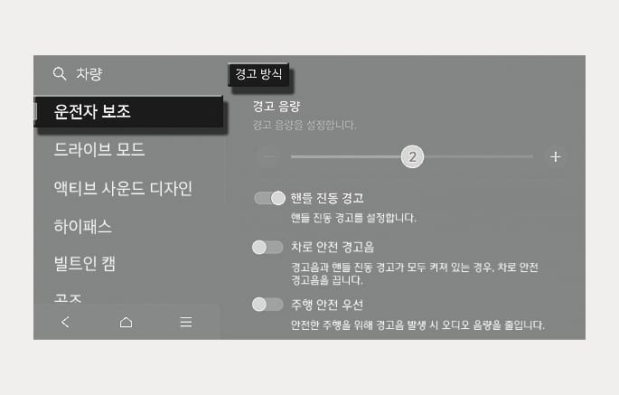

운전자 보조 기능 설정
인포테인먼트 시스템에서 각 운전자 보조 기능을 설정할 수 있습니다.
인포테인먼트 시스템의 설정 메뉴의 차량 > 운전자 보조에서 각 운전자 보조 기능을 설정할 수 있습니다.

2C_ADASSettings
-
반드시 안전한 곳에 정차한 후 운전자 보조 시스템을 설정하십시오.
-
운전을 시작하기 전 운전자 보조 시스템의 설정 상태를 확인하십시오.
-
각 기능에 대하여 설명을 숙지한 후 설정하십시오.
-
화면의
ƺ 을 누르면 운전자 보조 설정이 목록 보기로 표시됩니다. -
인포테인먼트 시스템 소프트웨어 버전에 따라 운전자 보조 시스템 설정이 취급설명서와 다를 수 있습니다. 이 경우 변경된 내용은 인포테인먼트 시스템 웹 매뉴얼에 접속하여 확인하십시오.
우측 화면의

2C_WarningTypeSetInfo
-
경고 음량: 경고 음량의 크기를 조절합니다.
-
핸들 진동 경고: 핸들 진동 경고를 설정합니다.
-
차로 안전 경고음: 경고 음량과 핸들 진동 경고가 모두 켜져 있는 경우, 차로 안전 경고음을 끌 수 있습니다.
-
주행 안전 우선: 인포테인먼트 시스템에서 설정하면 안전한 주행을 위해 경고음 발생 시 오디오 음량을 줄입니다.
-
주차 안전 우선: 인포테인먼트 시스템에서 설정하면 안전한 주차를 위하여 주차 보조 영상 작동 중에는 오디오 음량을 줄입니다.
-
경고 방식을 변경하면 다른 운전자 보조 기능의 경고 방식도 같이 변경될 수 있습니다. 고려하여 변경하십시오.
-
시동을 껐다가 걸어도 경고 방식 설정은 유지됩니다.
-
차량 사양에 따라 설정 메뉴가 없을 수 있습니다.
-
경고 음량을 끄면 차로 이탈방지 보조, 후측방 충돌방지 보조, 후방 교차 충돌방지 보조의 경고음이 꺼지지만, 이외 기능의 경고음은 작은 소리로 울립니다.
-
경고 음량과 핸들 진동 경고는 동시에 꺼지지 않습니다. 하나를 끌 경우, 다른 하나는 활성화 됩니다.
-
차로 안전 경고음은 경고 음량과 핸들 진동 경고가 모두 켜져 있을 때 끌 수 있습니다.